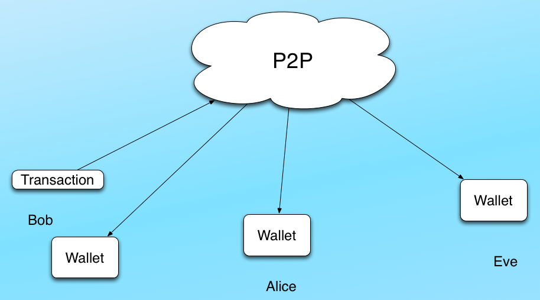

What is Bitcoin,
and how can I use it?
CC BY
Some quotes
The Most Dangerous Project We've Ever Seen
-Jason Calacanis
Bitcoin Will Probably Kill Everything
-Brett Michael Dykes
We make money democratic
-Amir Taaki
It’s the perfect currency by design
-Hill Ferguson from PayPal
Bitcoin is money
- Medium of exchange: traded for other stuff
- Unit of account: fungible, all bitcoins are the same
- Unit of account: divisible down to 100 Millionth, a 'Satoshi'
- Store of value: Bitcoins are scarce, max 21 million (currently ~12 million)
Bitcoin is money on the net
Transactions are
How are they created?
- 25 new Bitcoins are created on average each 10 minutes, in a process called "mining"
- Mining is the way new Bitcoins are distributed.
- Mining validates transactions
- Anyone can mine!
How do you get Bitcoins?
- Mine them
- Earn them
- Buy and sell them, most often at MtGox or BitStamp
- In Sweden at Btcx, Kapiton and Safello
Bitcoins are quite hard to get, but really easy to use
How does Bitcoin work?
The first three times you think you understand Bitcoin, you don't.
-Dan Kaminsky
Example: 13dhfDmPEvMXCBs44rU6vCuTDK42rVoTtw
- Can be created offline
- You can have any number of addresses, and they cannot be tracked back to you
- 34 characters or less
- Case sensitive
- O0Il are never used
- Contains checksums, 2^-32 risk of misstyped address
- Is the 160-bit hash of the public part of a key pair
- The address, public and private key are kept in a wallet
- A collection of inputs and outputs
- The corresponding private key is needed to sign a transaction with a Bitcoin input address
- The inputs are outputs from a previous transaction
- An output contains a value and a script, which can be just an address, or a program!
- Inputs = outputs + fee

What's wrong with the picture?
Solving double spending
- Timestamp
- Distributed database
- This is mining
Blocks - Mining output
- Contains a header + a list of transactions
- The SHA256 hash of the blockheader must be below the current target
- The miners tries to generate a correct block, by trial and error
- The miners are currently rewarded 25 BTC + fees per block
The Blockchain
- Currently contains 265 000+ blocks
- Is over 10 GB in size and grows with ~25 MB/day
- Starts with a genesis block, created 2009-01-03
The genesis block contains the text:
The Times 03/Jan/2009 Chancellor on brink of second bailout for banks
Bitcoin could possibly replace
- Fiat-money: the "Fed"
- Storage and accounting of money: banks
- Transfer of money: SWIFT, SEPA, Swish, Western Union, PayPal
- Store of value: gold and silver
- Credit cards
- Cash: coins and banknotes
- Stocks
- Futures
THE END
mats.henricson@crisp.se & martin@kodmagi.se
{kind=link}